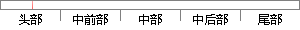

2 ARM处理器的工作状态和工作模式
片段位置图

相似结果
相似片段：2.1ARM处理器的介绍 2.1.1ARM处理器的工作模式和异常处理机制 ARM(Advanced...器支持7种运行模式,分别如下:①用户模式(usr):ARM处理器正常的程序执行状态。...
| 标题 | 《基于ARM的嵌入式系统驱动程序设计》 |
| 对比库 | 中国学位论文全文数据库 |
| 作者 | 林强 |
| 机构 | 西安电子科技大学 |
| 分类 | 计算机应用技术 |
| 年份 | 2007 |
| 相似率 | 78.57% （轻度抄袭） |
※ 片段修改建议 ※
近似词参考：- 状态：状况
- 工作：事情
系统自动生成语句：2 ARM处理器的事情状况和事情模式
注：本片段修改建议为系统自动生成，仅供参考。